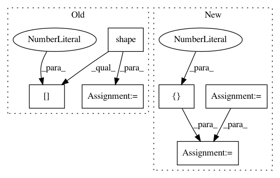

f55217e5fee88bc38e58e62e886f79e561c4d069,texar/losses/losses_utils.py,,reduce_batch_time,#Any#Any#Any#Any#Any#Any#,110
Before Change
if reduce_batch:
sequence = tf.reduce_sum(sequence, axis=[0])
if average_across_batch:
sequence = sequence / tf.to_float(tf.shape(sequence_length)[0])
return sequence
def reduce_dimensions(tensor, average_axes=None, sum_axes=None, keepdims=None):
After Change
sequence = tf.reduce_sum(sequence, axis=[1])
elif average_across_timesteps:
if sequence_length is None:
sequence = tf.reduce_mean(sequence, axis=[1])
else:
sequence = tf.reduce_sum(sequence, axis=[1])
if average_across_timesteps:
sequence = sequence / tf.to_float(sequence_length)
if sum_over_batch:
sequence = tf.reduce_sum(sequence, axis=[0])
elif average_across_batch:
sequence = tf.reduce_mean(sequence, axis=[0])
return sequence
In pattern: SUPERPATTERN
Frequency: 3
Non-data size: 6
Instances
Project Name: asyml/texar
Commit Name: f55217e5fee88bc38e58e62e886f79e561c4d069
Time: 2018-08-14
Author: zhitinghu@gmail.com
File Name: texar/losses/losses_utils.py
Class Name:
Method Name: reduce_batch_time
Project Name: HyperGAN/HyperGAN
Commit Name: c7320c3b31fb300e6bab95b5a2e29212f332f2db
Time: 2018-08-20
Author: mikkel@255bits.com
File Name: hypergan/samplers/batch_walk_sampler.py
Class Name: BatchWalkSampler
Method Name: sample
Project Name: GPflow/GPflow
Commit Name: bd1e9c04b48dd5ccca9619d5eaa2595a358bdb08
Time: 2020-01-31
Author: st--@users.noreply.github.com
File Name: gpflow/kernels/statics.py
Class Name: Constant
Method Name: K